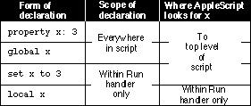

Scope of Properties and Variables Declared at the Top Level of a Script
Figure 8-1 summarizes the scope of properties and variables declared at the top level of a script. Sample scripts using each form of declaration follow.Figure 8-1 Scope of property and variable declarations at the top level of a script

The scope of a property declaration at the top level of a script extends to any subsequent statements anywhere in the script. Here's an example:
property theCount : 0 increment() on increment() set theCount to theCount + 1 display dialog "Count is now " & theCount & "." end incrementWhen it encounters the identifier theCount at any level of this script, AppleScript associates it with thetheCountproperty declared at the top level.The value of a property persists after the script in which the property is defined has been run. Thus, the value of
theCountin the previous example is 0
the first time the script is run, 1 the next time, and so on. The property's
current value is saved with the script and is not reset to 0 until the script is recompiled--that is, modified and then run again, saved, or checked for syntax.Similarly, the scope of a global variable declaration at the top level of a script extends to any subsequent statements anywhere in the script. The next example accomplishes the same thing as the previous example, except that it uses a global variable instead of a property to keep track of the count.
global theCount increment() on increment() try set theCount to theCount + 1 display dialog "Count is now " & theCount & "." on error set theCount to 1 display dialog "Count is now 1." end try end incrementWhen it encounters the identifier theCount at any level of this script, AppleScript associates it with thetheCountvariable declared as a global at the top level of the script. However, because a global variable declaration doesn't set the initial value of a property, the script must use a Try statement
to determine whether the value has been previously set. Thus, if you want
the value associated with an identifier to persist, it is often easier to declare
it as a property so that you can declare its initial value at the same time.If you don't want the value associated with an identifier to persist after a script is run but you want to use the same identifier throughout a script, declare a global variable and use the Set command to set its value each time the script is run. Here's an example:
global theCount set theCount to 0 on increment() set theCount to theCount + 1 end increment increment() --result: 1 increment() --result: 2Each time theon incrementhandler is called within the script, the global variabletheCountincreases by 1. However, when you run the entire script again,theCountis reset to 1.In the absence of a global variable declaration at the top level of a script, the scope of a variable declaration using the Set command at the top level of a script is normally restricted to the Run handler for the script. For example, this script declares two separate
theCountvariables:set theCount to 10 on increment() set theCount to 5 end increment increment() --result: 5 theCount --result: 10The scope of the firsttheCountvariable's declaration, at the top level of the script, is limited to the Run handler for the script. The scope of the secondtheCountdeclaration, within theon incrementhandler, is limited to that handler. AppleScript keeps track of each variable independently.To associate a variable in a handler or a script object with the same variable declared at the top level of a script with the Set command, you can use a global declaration in the handler, as shown in the next example.
set theCount to 0 on increment() global theCount set theCount to theCount + 1 end increment increment() --result: 1 theCount --result: 1In this case, when AppleScript encounters thetheCountvariable within the on increment handler, it looks for a previous mention oftheCountnot only within the handler, but also at the top level of the script. However, references
totheCountin any other handler in the script are local to that handler unless the handler also explicitly declarestheCountas a global. This kind of global declaration is discussed in more detail in the sections that follow.To restrict the context of a variable to a script's Run handler regardless of subsequent global declarations, you must declare it explicitly as a local variable, as shown in this example:
local theCount set theCount to 10 on increment() global theCount set theCount to theCount + 2 end increment increment() --error: "The variable theCount is not defined" theCount --result: 10Because thetheCountvariable in this example is declared as local to the Run handler, any subsequent attempt to use the same variable as a global results in an error.
- Note
- If you declare a variable with the Set command at the top level of a script or script object and then declare the same identifier as a property, the declaration with the Set command overrides the property declaration. For example, the script
set x to 10 property x: 5 return x
- returns 10, not 5. This occurs because AppleScript always evaluates property declarations at the top level of a script before it evaluates Set command declarations.